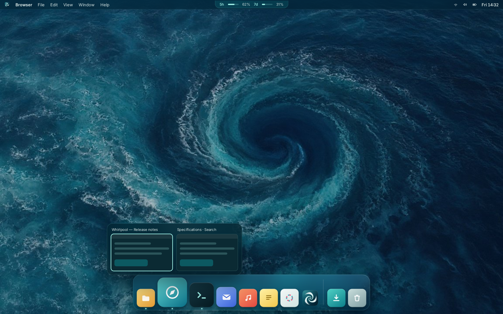
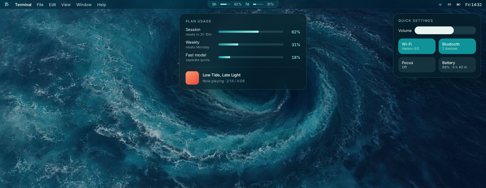
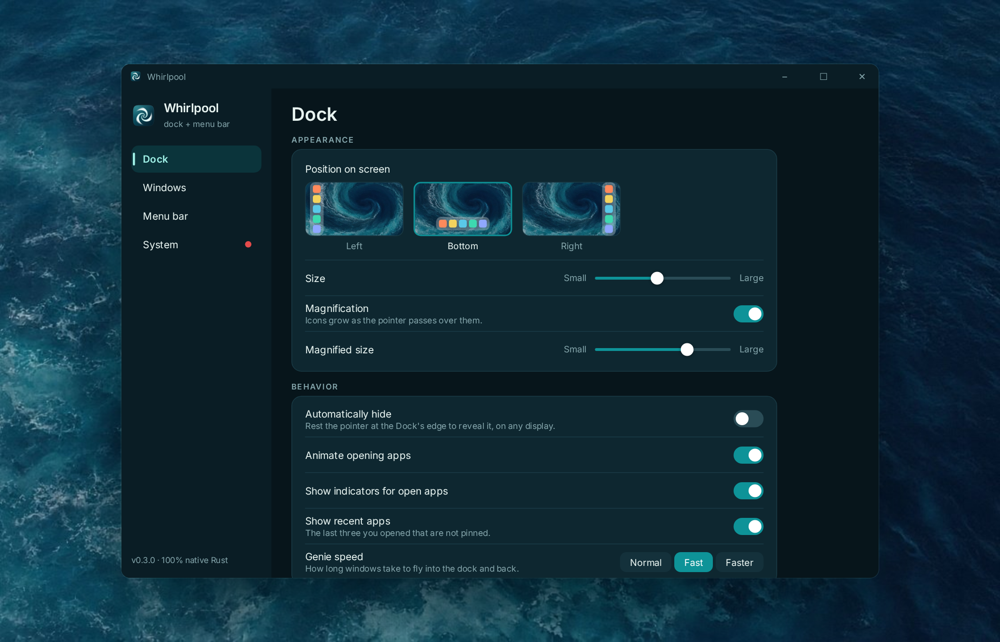

Whirlpool
A dock and menu bar for Windows, written entirely in Rust. Two plain executables. No web view, no runtime, no telemetry.
Windows 10 1903+ / Windows 11 / x64 / MIT
Live demo. Move your cursor across the dock.
- 01
The dock
Cursor-based magnification with a spring behind it, so icons swell as you approach and settle when you leave. Pin, reorder, group by dropping one app onto another, and let recent apps appear on their own.
- 02
Windows, previewed
Hover an app with several windows and get live, titled previews. Minimized windows fold into their icon with the Genie effect, in three speeds, or stay as thumbnails.
- 03
Menu bar and island
Clock, network, volume, battery, input language and tray icons. A curved island shows what is playing and your AI plan limits, checked every five minutes, credentials never stored.
- 04
Settings, native
A separate egui window with live changes, light and dark following Windows, and previews drawn over your own wallpaper. English, Spanish and French.



Fig. 1 — Dock, bottom, magnification 1.62×
Specification sheet
What is in the box.
- Language
- Rust, edition 2024. No JavaScript, no web view, no .NET.
- Programs
- whirlpool.exe dock and menu bar
whirlpool-settings.exe settings window - Size
- See the latest release.
- Dock rendering
- Win32, DirectComposition, Direct2D, DirectWrite
- Settings rendering
- egui on OpenGL, Inter typeface embedded
- Backdrop
- Glass blur on Windows 11. Solid surfaces on Windows 10, which has no desktop backdrop blur.
- Requires
- Windows 10 1903 or later, or Windows 11. 64-bit.
- Themes
- Light and dark, following Windows. Abyss and Foam palettes.
- Languages
- English, Spanish, French
- Configuration
- %APPDATA%\Whirlpool\config.json
Migrates from Muelle and WinDock folders on first run. - Install
- No installer, no admin rights. Per-user.
- Recovery
- A watchdog restores the Windows taskbar if the dock exits. whirlpool.exe --restore does it by hand.
- Network
- Optional only: release check on opening Settings, and AI usage lookups. Both can be turned off. No telemetry.
- License
- MIT. Fork of Muelle by Crafter Station.
Release menu
Pick a build.
- Reading releases from GitHub…
One line, no admin
irm https://raw.githubusercontent.com/prashantchataut/whirlpool/main/scripts/install.ps1 | iexThe binaries are unsigned, so SmartScreen may ask you to choose More info, then Run anyway. Checksums are in SHA256SUMS.txt on each release.